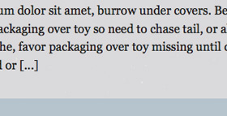
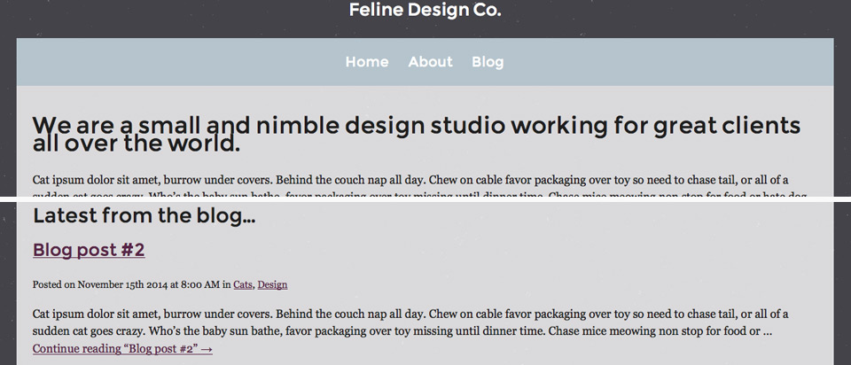

Don’t Fear the Custom Theme
How to build a custom WordPress theme with only four files
Linn Øyen Farley
drollic.ca / @LinnOyenFarley
Linn Øyen Farley
Web designer/developer
Building things on the internet since 2005
Usually working solo or with a designer
Mainly use WordPress for client sites
I ♥ WordPress
- Amazing community and resources
- Active plugin community (don’t have to re-invent the wheel)
- Super easy to hand off to clients
But ...
- “WordPress outputs bloated code”
- “All WordPress sites look the same”
- and/or
- “I don’t have time to learn PHP”
- “I tried customizing a [commercial theme provider] theme once and I couldn’t find anything”
This talk
- is a file-by-file guide to creating a fully-functional WordPress theme, based on an existing HTML/CSS design
- gives an overview of the bare minimum of PHP functions needed to build a WordPress theme (plus some extra stuff)
- suggests how you could use a custom WordPress theme as a tool for rapid prototyping
- uses WordPress.org’s Theme Guidelines (make.wordpress.org/themes/handbook/guidelines/) as a starting point for best practices
This talk won’t
- cover HTML/CSS/design principles
- 100% accurately represent how I build themes for clients
- focus on making a WordPress.org-repository-ready theme and/or incorporate every use case into a single theme
- be a hands-on workshop — I have less than an hour, so I’ll be moving pretty quickly
Commercial theme
Full disclosure: I installed this exact theme on a client’s site earlier this year. There is definitely a place for commercial and child themes in the WordPress ecosystem, but creating a custom theme may be appropriate more often than you think.
Recent theme for a client
- 404.php
- comments.php
- footer.php
- functions.php
- header.php
- images/
- logo.png
- nav-icon.png
- search.png
- index.php
- js/
- html5shim.js
- respond.min.js
- page.php
- screenshot.png
- searchform.php
- style.css
Theme for WordPress.org
- index.php
- screenshot.png
- style.css
Note: The recommended theme guidelines (make.wordpress.org/themes/handbook/guidelines/theme-check/#recommended) include a few more files, but the three above are the only required files (make.wordpress.org/themes/handbook/guidelines/theme-check/#required).
...plus we’ll talk about functions.php, because it’s my favourite
Wait a minute...
How can this →
be successfully reduced to this:
- index.php
- screenshot.png
- style.css
(you might be wondering)
The template hierarchy
Reference: codex.wordpress.org/Template_Hierarchy
The template hierarchy
For our purposes, the most important part of that giant diagram is on its right-hand side: all arrows lead to index.php.
If your theme contains the other files on the diagram, they will trump index.php, but if you only have index.php, that’s fine too!
List of requested features
- Responsive design
- Homepage with intro paragraph and latest post
- About page with image gallery
- Blog with widgets in the sidebar
WordPress dashboard tasks
- Pages → Add New:
- Home (the intro paragraph), About (the image gallery), and Blog (with no content)
- Posts → Add New:
- create a few blog posts
- Settings → Reading:
- Choose “Front page displays: A static page”
- Make Home your “Front page” and Blog your “Posts page”
- Appearance → Menus:
- Create a main navigation menu with the pages you’ve made
File #1:
screenshot.png
Start with a design
Here’s a design ready to go, built in HTML and CSS. The image below covers your first required file, screenshot.png.
- Recommended size: 880x660px
- Should be a “reasonable facsimile” of the theme after it is initially activated with default options
Reference: make.wordpress.org/themes/handbook/guidelines/theme-check/#required
File #2:
style.css
Get your stylesheet ready
Make sure your CSS file is called style.css, and that it starts with the following comment:
/*
Theme Name: [Client's Name]
Description: Custom theme for [Client's Name].
Author: Linn Oyen Farley
Author URI: http://drollic.ca
Version: 1.0
*/The absolute minimum you need to include here is your theme’s name, but why not give yourself some credit?
Reference: codex.wordpress.org/Theme_Development#Theme_Stylesheet
Include WordPress-specific classes
WordPress auto-generates a few classes, which you can include if you want to style them:
/* Image alignment classes */
.aligncenter {}
.alignleft {}
.alignright {}
/* Image caption-related classes */
.wp-caption {}
.wp-caption-text {}
.gallery-caption {}
/* Post and comment classes */
.sticky {}
.bypostauthor {}
/* Menu classes */
.current_page_item, .current_page_parent {}File #3:
index.php
Move from HTML to PHP
Take your index.html file...
<!-- HTML goes here -->...and save it as index.php.
<!-- HTML goes here -->
<?php // and also PHP ?>That’s all you need to do to start writing PHP in the file. Most WordPress theme files consist of a lot of HTML and a bit of PHP.
Interlude:
Intro to PHP
Things to keep in mind:
- PHP isn’t as forgiving as HTML or CSS
- Mistakes in your code = white screen of death + (sometimes) error messages
- You only need to know a little PHP syntax to build WordPress themes
- Use a code editor with syntax checking, or run your code through a validator like PHPCodeChecker.com
Always:
- enclose PHP with opening (
<?php) and closing (?>) tags - decide to use either single or double quotes
- mind your semicolons
<?php ?>
<?php echo "Hello world"; ?>
<?php echo 'Hello world'; ?>
<?php // this is a comment ?>Reference: php.net/manual/en/index.php
Conditionals
if ( condition1 ) {- if condition #1 is true, do thing #1
} elseif ( condition2 ) {- otherwise, if condition #2 is true, do thing #2
} else {- or, if none of those conditions are true, do thing #3
}- don’t forget the closing curly brace!
Reference: Conditional statements: php.net/manual/en/language.control-structures.php
Operators
&&(and)||(or)==(is equal to)!=(is not equal to)
References:
Logical operators: php.net/manual/en/language.operators.logical.php
Comparison operators: php.net/manual/en/language.operators.comparison.php
Loops
while ( condition1 ) { }
The while loop starts with a condition, and then specifies what to do as long as that condition is true.
For example, the main posts loop in WordPress states that as long as there are posts to show (while you have posts), set up each post (so you can grab its title, content, etc).
Variables
$indicates a variable, either one that you want to store or one that is already stored
$myNewVariable = 'This variable should contain some text!';$myNewVariable now contains that string of text, which you can use later.
Variables
echois used to display/output the contents of an existing variable
This:
<p><?php echo $myNewVariable; ?></p>would output your text string on the page:
This variable should contain some text!Reference: php.net/manual/en/function.echo.php
Conditional tags
WordPress has lots of its own functions that you can use in your theme’s conditional statements.
I’m going to cover these ones:
is_front_page()- true if you’re viewing the front page
is_page()- true if you’re viewing a single page
is_single()- true if you’re viewing a single post
Reference: codex.wordpress.org/Conditional_Tags
Back to file #3:
index.php
wp_title()
Replace the contents of <title></title> with wp_title().
This will output a separator and the title of the page or post being viewed.
If you’re viewing the front page, it won’t output anything.
wp_title() in action
Replacing this:
<title>Feline Design Co.</title>with this:
<title><?php wp_title(); ?></title>outputs this (when viewing the blog post with this title):
» Blog post #1wp_title() & bloginfo('name')
The title function looks best if you also add the site’s name (the one you specify under Settings → General), and change the separator. This:
<title><?php wp_title('—', true, 'right'); bloginfo( 'name' ); ?></title>changes the separator to a long dash, moves it to the right-hand side, and adds the site name, outputting this (when viewing that same blog post):
Blog post #1 — Feline Design Co.wp_head() & wp_footer()
These required tags always need to be included in your theme. They go immediately before your closing head tag and your closing body tag, respectively:
<?php wp_head(); ?>
</head>
<body> <?php wp_footer(); ?>
</body>
</html>References:
codex.wordpress.org/Function_Reference/wp_head
codex.wordpress.org/Function_Reference/wp_footer
language_attributes() & bloginfo('charset')
You can dynamically specify the site’s language and character set using these functions. This:
<html <?php language_attributes(); ?>>
<head>
<meta charset="<?php bloginfo( 'charset' ); ?>" />outputs something like this:
<html lang="en-US">
<head>
<meta charset="UTF-8" />Reference: codex.wordpress.org/Function_Reference/language_attributes
bloginfo('template_directory')
Replace all relative links to design elements (such as your logo in the header area) with links to those elements in your theme folder.
You can use the same bloginfo() function you used earlier to get your theme’s location.
Instead of asking for bloginfo('name') or bloginfo('charset'), ask for bloginfo('template_directory').
bloginfo('template_directory') in action
Replacing this:
<img src="images/logo.png" alt="Feline Design Co." />with this:
<img src="<?php bloginfo('template_directory'); ?>/images/logo.png" alt="<?php bloginfo('name'); ?>" />outputs this:
<img src="http://felinedesign.co/wp-content/themes/feline-design-co/images/logo.png" alt="Feline Design Co." />wp_nav_menu()
Replace your static navigation menu with the WordPress native menu (the one you can create under Appearance → Menus).
Make a note of whatever you put as the theme location here, because you’ll need it later!
Reference: codex.wordpress.org/Function_Reference/wp_nav_menu
wp_nav_menu() in action
Replacing this:
<ul>
<li><a href="index.html">Home</a></li>
<li><a href="about.html">About</a></li>
<li><a href="blog.html">Blog</a></li>
</ul>with this:
<?php wp_nav_menu('theme_location' => 'main-nav'); ?>Make a note of “main-nav” for later!
wp_nav_menu() in action
...outputs something like this:
<div class="menu">
<ul>
<li class="page_item page-item-474"><a href="http://felinedesign.co/about/">About</a></li>
<li class="page_item page-item-472"><a href="http://felinedesign.co/blog/">Blog</a></li>
<li class="page_item page-item-470 current_page_item"><a href="http://felinedesign.co/">Home</a></li>
</ul>
</div>Until you assign a menu to the “main-nav” theme location, wp_nav_menu() will default to an alphabetical list of your pages.
The WordPress loop
Replace your hard-coded content with dynamic content. Start by checking if any content exists, and display an error message if it doesn’t:
<?php if ( ! have_posts() ) { ?>
<h1>Not Found</h1>
<p>Sorry, nothing found.</p>
<?php } ?>Anatomy of an if statement
A basic if statement is structured like this:
- the word
if - opening parenthesis
- condition
- closing parenthesis
- opening curly brace
- things that should happen if the condition is true
- closing curly brace
have_posts()
<?php if ( ! have_posts() ) { ?>
<h1>Not Found</h1>
<p>Sorry, nothing found.</p>
<?php } ?>have_posts() is a WordPress function that checks if there is any content to display (either posts or pages).
The ! means not, i.e. if there is not any content, do the following — in this case, display a “Not Found” heading and message.
Reference: codex.wordpress.org/Function_Reference/have_posts
The WordPress loop
If there is stuff to show, however, it should display:
<?php if ( ! have_posts() ) { ?>
<h1>Not Found</h1>
<p>Sorry, nothing found.</p>
<?php } else {
// Display the content!
} // end if ?>Anatomy of an if/else statement
When you want different stuff to happen when your condition is true vs. when it is not true, the if statement needs a few extra parts after the closing curly brace:
- the word
else - opening curly brace
- things that should happen if the condition is not true
- closing curly brace
The WordPress loop
while ( have_posts() ) {
the_post(); ?>
<h1><?php the_title(); ?></h1>
<?php the_content();
} // end whileIf you do have content, start a while loop to display it.
This states that as long as there is content to show, set up the_post(). the_post() function contains all of the info about a post or page in WordPress, so it’s ready for you to grab and use.
the_title() & the_content()
<h1><?php the_title(); ?></h1>the_title() will pull whatever you’ve put in the post or page title field. WordPress doesn’t automatically format your title, so you need to wrap the PHP tag in some HTML to style it.
<?php the_content(); ?>the_content() pulls everything from the main content editing box in WordPress, formatting and all.
References:
codex.wordpress.org/Function_Reference/the_title
codex.wordpress.org/Function_Reference/the_content
Recap: the full loop
Here is the loop in its entirety, with comments throughout:
<?php
// If we do not have content...
if ( ! have_posts() ) {
// ...then show an error message: ?>
<h1>Not Found</h1>
<p>Sorry, nothing found.</p>
<?php
// Otherwise...
} else {
// ...as long as there is content to show...
while ( have_posts() ) {
// ...set up each piece of content so we can grab stuff from it:
the_post(); ?>
<h1><?php the_title(); ?></h1>
<?php the_content();
} // end while
} // end if ?>Theme test drive
At this point, regular pages look almost perfect:
Theme test drive
You still need to set up a menu location to get those menu items in the right order, but I’ll cover that when we get to functions.php.
Theme test drive
Our error page is also functioning well:
Theme test drive
The blog page needs some additional info on each post, beyond just the title and content. It also needs a widgetized sidebar:
Theme test drive
Our single blog posts need additional info and a sidebar too, plus a section for comments:
Theme test drive
Finally, the homepage shouldn’t display the_title(), and it’s missing the latest post at the bottom:
is_front_page()
Once you’ve established that you do have content to show, start by checking whether you’re viewing the front page.
If you are, display the content without the title:
<?php if ( is_front_page() ) {
the_content();
} // end if ?>Reference: codex.wordpress.org/Function_Reference/is_front_page
WP_Query()
To grab the latest post and display it on the front page, you can use the function WP_Query(). First, store the result (if there is one) in a variable:
<?php $latestPost = new WP_Query('posts_per_page=1'); ?>Reference: codex.wordpress.org/Class_Reference/WP_Query
WP_Query()
Then you can use the same have_posts() function you’ve already seen, but apply it specifically to your $latestPost variable. This double-checks that there is a post to show, before adding a “Latest from the blog” heading and setting up the_post():
<?php if ( $latestPost->have_posts() ) {
// If there is a post to show, add a title before starting the loop: ?>
<h2>Latest from the blog...</h2>
<?php while ( $latestPost->have_posts() ) {
$latestPost->the_post();
} // end while
} // end if ?>the_excerpt()
If there is a post to show, you can use the_title() again to display its title.
Instead of displaying the full content of the post, only display its excerpt by using the function the_excerpt():
<h3><?php the_title(); ?></h3>
<?php the_excerpt(); ?>Reference: codex.wordpress.org/Function_Reference/the_excerpt
the_permalink()
the_permalink() will get the post’s URL/permalink, so you can make the post title link to the full post:
<h3><a href="<?php the_permalink(); ?>"><?php the_title(); ?></a></h3>Reference: codex.wordpress.org/Function_Reference/the_permalink
the_time()
Add the date and time the post was published, using the_time() and the Codex’s date and time formatting cheatsheet (codex.wordpress.org/Formatting_Date_and_Time). This:
<p class="metadata">Posted on <?php the_time('F jS Y'); ?> at <?php the_time('g:i A'); ?></p>outputs this:
<p class="metadata">Posted on November 15th 2014 at 8:00 AM</p>Reference: codex.wordpress.org/Template_Tags/the_time
the_terms()
Add the post’s categories by using the_terms(). This:
in <?php the_terms( $post->ID, 'category' ); ?>outputs this:
in <a href="http://felinedesign.co/category/cats/" rel="tag">Cats</a>, <a href="http://felinedesign.co/category/design/" rel="tag">Design</a>Recap: latest post
Here’s the complete block of code to display the post’s permalink, title, metadata, and excerpt:
<h3><a href="<?php the_permalink(); ?>"><?php the_title(); ?></a></h3>
<p class="metadata">Posted on <?php the_time('F jS Y'); ?> at <?php the_time('g:i A'); ?> in <?php the_terms( $post->ID, 'category' ); ?></p>
<?php the_excerpt(); ?>And this is how it looks:
Homepage: complete!
is_page()
You can use the same code to display each post’s metadata on the main blog page and on single posts.
But first, to avoid displaying it on pages, add another condition to the loop:
<?php } elseif ( is_page() ) {
// If this is a regular page, just display the title and content: ?>
<h1><?php the_title(); ?></h1>
<?php the_content();
} else {
// Otherwise, display the title and content plus the metadata ?>
<h1><?php the_title(); ?></h1>
<p class="metadata">Posted on <?php the_time('F jS Y'); ?> at <?php the_time('g:i A'); ?> in <?php the_terms( $post->ID, 'category' ); ?></p>
<?php the_content();
} // end if ?>comments_template()
To avoid having comments display on pages, add the comments template at the end of the loop, after you’ve established that you’re not viewing a page:
<p class="metadata">Posted on <?php the_time('F jS Y'); ?> at <?php the_time('g:i A'); ?> in <?php the_terms( $post->ID, 'category' ); ?></p>
<?php the_content();
comments_template(); ?>Reference: codex.wordpress.org/Function_Reference/comments_template
comments_template() in action
next_posts_link() & previous_posts_link()
Once you have more posts than “Blog pages show at most” (under Settings → Reading), you’ll need pagination links to navigate the blog.
Add the following code between the_content() and comments_template():
<p class="aligncenter">
<?php next_posts_link( '← Older' ); ?>
<?php previous_posts_link( 'Newer →' ); ?>
</p>References:
codex.wordpress.org/Function_Reference/next_posts_link
codex.wordpress.org/Function_Reference/previous_posts_link
next_posts_link() & previous_posts_link() in action
Depending on where you are in the blog, these links may look like any of the following examples:
Saving space for widgets
You’ll be creating a widgetized area in functions.php, so save some space for it now.
Before you start the loop, make sure you’re not on a page, and then start the primary section:
<section class="main">
<?php if ( ! is_page() ) { ?>
<section class="primary">
<?php } ?>Saving space for widgets
Then just before closing the main section, check to make sure you’re not on a page again, and add an aside:
<?php if ( ! is_page() ) { ?>
</section><!-- .primary -->
<aside class="secondary">
<?php dynamic_sidebar( 'blog-widget-area' ); ?>
</aside><!-- .secondary -->
<hr class="clear" />
<?php } ?>Make a note of “blog-widget-area” for later!
Reference: codex.wordpress.org/Function_Reference/dynamic_sidebar
Saving space for widgets
For now, this will give you an empty sidebar area on the blog and on single posts:
is_single()
Post titles should appear slightly differently on single posts vs. on the main blog page.
Inside the final else statement, add one more conditional statement to take care of this:
if ( is_single() ) {
// If you're viewing a single post, display the title as an h1: ?>
<h1><?php the_title(); ?></h1>
<?php } else {
// Otherwise, display the title as an h3 and link it to the full post: ?>
<h2><a href="<?php the_permalink(); ?>"><?php the_title(); ?></a></h2>
<?php } ?>
<p class="metadata">Posted on <?php the_time('F jS Y'); ?> at <?php the_time('g:i A'); ?> in <?php the_terms( $post->ID, 'category' ); ?></p>
<?php the_content(); ?>File #4:
functions.php
Not required, but super useful
This file is a plugin bundled with your theme. It can add lots of functionality to your site, but keep in mind that it will all disappear if you switch your theme.
There are so many things you can do with a functions.php file, and I have very little time, so I’m just going to cover a few examples of what’s possible.
Create your functions file
Make a new file called functions.php, and add opening and closing PHP tags:
<?php
?>register_nav_menus()
Remember making a note of “main-nav”, when you were replacing your hard-coded menu with wp_nav_menu()?
It’s time to create that menu location, so you can assign your menu to it under Appearance → Menus:
// Register menu(s)
register_nav_menus(
array(
'main-nav' => 'Main Navigation'
)
);Reference: codex.wordpress.org/Function_Reference/register_nav_menus
register_nav_menus()
If your theme is going to use more than one menu, you can register them all in one go:
// Register menu(s)
register_nav_menus(
array(
'main-nav' => 'Main Navigation',
'footer-nav' => 'Footer Navigation'
)
);To display the menu assigned to Footer Navigation (under Appearance → Menus), add the code below to index.php:
<?php wp_nav_menu('theme_location' => 'footer-nav'); ?>register_nav_menus() in action
 Ahhhh. Much better.
Ahhhh. Much better.
(Note: you need to go to Appearance → Menus in the WordPress dashboard, create a menu, and select Main Navigation as its Theme location for this to work.)
register_sidebar()
Although the word “sidebar” is right there, this is how you create any widgetized area, i.e. areas that you can drag widgets into under Appearance → Widgets.
References:
codex.wordpress.org/Function_Reference/register_sidebar
generatewp.com/sidebar/ (writes the code for you)
// Register widgetized area(s)
function my_widgets_init() {
register_sidebar(
array(
'id' => 'blog-widget-area',
'name' => 'Blog Widget Area',
'description' => 'Appears on the blog and single posts.',
'before_title' => '<h3 class="widget-title">',
'after_title' => '</h3>',
'before_widget' => '<section class="blog-widget">',
'after_widget' => '</section><!-- .blog-widget -->',
)
);
}
add_action( 'widgets_init', 'my_widgets_init' );register_sidebar()
Remember “blog-widget-area”? Whatever you put as the ID in functions.php:
'id' => 'blog-widget-area'needs to match what you put in dynamic_sidebar() in index.php:
<?php dynamic_sidebar( 'blog-widget-area' ); ?>register_sidebar()
You can register several widget areas in one go with this function, and then display each one using dynamic_sidebar('the-id-you-chose'):
// Register widgetized area(s)
function my_widgets_init() {
register_sidebar(
array(
'id' => 'blog-widget-area',
'name' => 'Blog Widget Area',
'description' => 'Appears on the blog and single posts.',
'before_title' => '<h3 class="widget-title">',
'after_title' => '</h3>',
'before_widget' => '<section class="blog-widget">',
'after_widget' => '</section><!-- .blog-widget -->',
)
);
register_sidebar(
array(
'id' => 'footer-widget-area',
'name' => 'Footer Widget Area',
'description' => 'Appears in the footer.',
'before_title' => '<h5 class="widget-title">',
'after_title' => '</h5>',
'before_widget' => '<section class="footer-widget">',
'after_widget' => '</section><!-- .footer-widget -->',
)
);
}
add_action( 'widgets_init', 'my_widgets_init' );register_sidebar() in action
We have a sidebar!
(Note: you need to go to Appearance → Widgets in the WordPress dashboard, and drag widgets into the area called Blog Widget Area for this to work.)
wp_enqueue_scripts
Instead of including stylesheets in the <head> of your site:
<link rel="stylesheet" href="style.css" type="text/css"/>
<link href='http://fonts.googleapis.com/css?family=Montserrat' rel='stylesheet' type='text/css'>register and then enqueue them in functions.php:
// Register and enqueue styles and scripts
function my_scripts_and_styles() {
wp_register_style( 'core', get_stylesheet_uri(), false, '1.0', 'all' );
wp_register_style( 'fonts', 'http://fonts.googleapis.com/css?family=Montserrat', false, '1.0', 'all' );
wp_enqueue_style( 'core' );
wp_enqueue_style( 'fonts' );
}
add_action( 'wp_enqueue_scripts', 'my_scripts_and_styles' );Reference: codex.wordpress.org/Plugin_API/Action_Reference/wp_enqueue_scripts
wp_register_style()
This registers the theme’s default stylesheet:
wp_register_style( 'core', get_stylesheet_uri(), false, '1.0', 'all' );get_stylesheet_uri will grab the URL of style.css. This stylesheet has no dependencies on other CSS files to function, it’s at version 1.0, and it should be loaded on all media (as opposed to just “screen” or “print”).
References:
codex.wordpress.org/Function_Reference/wp_register_style
generatewp.com/register_style/ (writes the code for you)
wp_register_style()
This line registers a Google Fonts stylesheet:
wp_register_style( 'fonts', 'http://fonts.googleapis.com/css?family=Montserrat', false, '1.0', 'all' );It’s located off-site, so you need to give the full URL. It also has no dependencies, is at version 1.0, and should be loaded on all media.
wp_enqueue_scripts (for JS)
The same function can be used to register and enqueue scripts, if your theme has any.
To register and then enqueue a file called global.js in your theme, for example, you would add this below your wp_enqueue_style() lines:
wp_register_script( 'global', get_template_directory_uri() . '/js/global.js', array('jquery'), '1.0', true );
wp_enqueue_script('global');wp_register_script()
wp_register_script( 'global', get_template_directory_uri() . '/js/global.js', array('jquery'), '1.0', true );The first line registers a file called global.js, which is in a folder called “js” in the theme folder. It depends on jQuery to function (so it should load after jQuery does), it’s at version 1.0, and it should appear just before the closing </body> tag instead of in the <head>.
References:
codex.wordpress.org/Function_Reference/wp_register_script
generatewp.com/register_script/ (writes the code for you)
Conditionally enqueuing
WordPress comes with lots of .js files ready to go (they’ve already been registered), but until you enqueue them they won’t be loaded in your theme files.
comment-reply.js is one of these pre-registered scripts. It enhances threaded comments on single posts, but you only want it to load when it’s useful. To limit when this file is included, add this conditional statement to the end of your my_scripts_and_styles() function:
if ( is_singular() && get_option( 'thread_comments' ) && comments_open() ) {
wp_enqueue_script( 'comment-reply' );
}wp_enqueue_scripts in full
Here is the full block of code for your functions.php file:
// Register and enqueue styles and scripts
function my_scripts_and_styles() {
wp_register_style( 'core', get_stylesheet_uri(), false, '1.0', 'all' );
wp_register_style( 'fonts', 'http://fonts.googleapis.com/css?family=Montserrat', false, '1.0', 'all' );
wp_enqueue_style( 'core' );
wp_enqueue_style( 'fonts' );
// Only include the two lines below if you actually have global.js:
wp_register_script( 'global', get_template_directory_uri() . '/js/global.js', array('jquery'), '1.0', true );
wp_enqueue_script('global');
if ( is_singular() && get_option( 'thread_comments' ) && comments_open() ) {
wp_enqueue_script( 'comment-reply' );
}
}
add_action( 'wp_enqueue_scripts', 'my_scripts_and_styles' );excerpt_more
By default, WordPress adds [...] to the end of the_excerpt(). To replace this with an ellipsis character and a “Continue reading “[post title]” →” link to the full post, include this code in functions.php:
// Append ellipsis and continue reading link to automatic excerpts
function my_excerpt_more( $more ) {
return ' … <a href="'. get_permalink() .'">Continue reading “'. get_the_title() .'” →</a>';
}
add_filter('excerpt_more', 'my_excerpt_more');excerpt_more() in action
This:

now looks like this:
add_image_size()
If you want WordPress to automatically generate more image sizes than the ones available under Settings → Media, you can do so with this code:
// Register custom image sizes
add_image_size( 'slider', 750, 300, true ); // cropped to exactly 750 pixels wide by 300 pixels tall
add_image_size( 'narrow', 150, 999, false ); // sized to 150 pixels wide and proportional height (max 999 pixels)If you’ve uploaded images to your media library before adding this code, you need to run a plugin like Regenerate Thumbnails (wordpress.org/plugins/regenerate-thumbnails/). All future uploads will create these custom image sizes automatically.
Reference: codex.wordpress.org/Function_Reference/add_image_size
image_size_names_choose
This code will make your new image sizes available when inserting a picture into a post or a page:
// Add custom sizes to the WordPress Media Library
function my_custom_sizes( $sizes ) {
return array_merge( $sizes, array(
'slider' => __( 'Image Slider' ),
'narrow' => __( 'Narrow' )
) );
}
add_filter( 'image_size_names_choose', 'my_custom_sizes' );Make sure the lowercase name above matches whatever you called your new image sizes in the previous step.
Reference: codex.wordpress.org/Plugin_API/Filter_Reference/image_size_names_choose
Remove inline [gallery] styles
The default WordPress gallery inserts some inline CSS that you may want to override in your theme. You could use lots of !importants in your stylesheet, but it’s super easy to just stop them from loading entirely:
// Remove inline WordPress gallery styles
add_filter( 'use_default_gallery_style', '__return_false' );add_theme_support( 'post-thumbnails' )
Enable featured images for posts and pages with this:
// Add support for featured images
add_theme_support( 'post-thumbnails' );Then in index.php, check for and display the featured image. This code will get the “thumbnail” size, and add the class “alignright”:
if ( has_post_thumbnail() ) {
the_post_thumbnail( 'thumbnail', array( 'class' => 'alignright' ) );
}References:
codex.wordpress.org/Post_Thumbnails
codex.wordpress.org/Function_Reference/the_post_thumbnail
List of requested features, revisited
- Responsive design ✓
List of requested features, revisited
- Responsive design ✓
- Homepage with intro paragraph and latest post ✓

List of requested features, revisited
- Responsive design ✓
- Homepage with intro paragraph and latest post ✓
- About page with image gallery ✓
List of requested features, revisited
- Responsive design ✓
- Homepage with intro paragraph and latest post ✓
- About page with image gallery ✓
- Blog with widgets in the sidebar ✓
Questions?
@LinnOyenFarley
linn@drollic.ca
drollic.ca/wcto14
Slides, HTML & CSS template, and finished theme